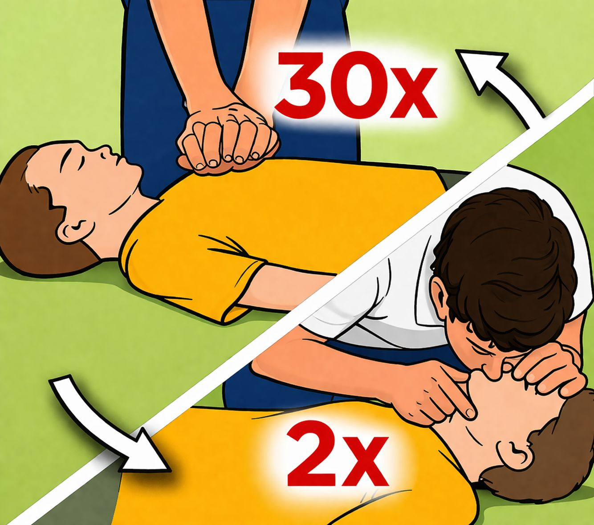

Pertolongan pertama adalah tindakan awal yang diberikan kepada korban sebelum bantuan medis datang. Dalam situasi seperti luka ringan atau tenggelam, tindakan cepat dapat mencegah kondisi menjadi lebih serius. Halaman ini memberikan panduan langkah demi langkah yang mudah dipahami sehingga pengguna dapat langsung mempraktikkannya dalam keadaan darurat.
Langkah-langkah :
Cuci tangan untuk mengurangi risiko infeksi pada luka.
Hentikan pendarahan jika luka dalam atau lebar, berikan tekanan lembut dengan perban hingga pendarahan berhenti.
Cuci luka dengan air mengalir agar dapat mengurangi risiko infeksi. Lalu, cuci area sekitar luka dengan sabun.
Oleskan krim atau salep antibiotik untuk menjaga kelembapan permukaan.
Tutup luka dengan perban atau kasa gulung untuk menjaga luka tetap bersih. Jika lukanya hanya goresan kecil, biarkan terbuka.
Temui dokter jika melihat tanda-tanda infeksi pada kulit atau di dekat luka. Misalnya seperti kemerahan, nyeri yang semakin parah, keluar cairan, hangat, atau bengkak.
Kondisi tenggelam akan membuat tubuh korban kekurangan oksigen, sehingga dapat menyebabkan gangguan kesehatan yang berakibat fatal. Berikut ini adalah beberapa langkah pertolongan pertama pada korban tenggelam :
Segera minta bantuan orang di sekitar
Langkah pertama menolong orang tenggelam adalah berteriak untuk menarik perhatian orang lain di sekitar. Terlepas dari Anda bisa membantu langsung maupun tidak, tidak ada salahnya meminta bantuan orang lain agar lebih mudah menolong korban.
Selain itu, Anda juga bisa meminta bantuan untuk menghubungi layanan darurat, baik tim penyelamat atau penjaga pantai jika hal ini terjadi di perairan laut.
Cari alat bantu untuk menolong korban
Beberapa ahli menyatakan bahwa cara menolong korban tenggelam dengan berenang sebenarnya hanya aman dilakukan oleh tenaga terlatih atau orang dengan kemampuan berenang yang sangat baik.
Jika tidak, jangan sekali-kali melakukannya dan sebaiknya cari alat bantu untuk menolong korban tenggelam, misalnya dengan menggunakan tali, tongkat, dan alat bantu lain yang mudah diraih oleh korban.
Periksa pernapasan korban tenggelam
Saat berhasil menolong korban tenggelam keluar dari air, langsung baringkan korban di tempat aman dan datar dengan posisi telentang. Setelah itu, mulai periksa pernapasannya dengan mendekatkan telinga ke mulut dan hidung korban untuk merasakan ada tidaknya embusan udara.
Selain itu, Anda juga bisa melihat gerakan dada korban untuk menandakan korban masih bernapas. Jika korban tidak bernapas, langsung periksa denyut nadi di leher korban selama 10 detik.
Lakukan resusitasi jantung paru (CPR)
Bila denyut nadi korban tenggelam tidak terasa sama sekali, Anda bisa lakukan resusitasi jantung paru sebagai upaya pertolongan medis untuk mengembalikan kemampuan bernapas dan sirkulasi darah dalam tubuh.
Teknik resusitasi jantung paru ini memiliki 3 tahapan yang dikenal dengan istilah C-A-B (compression, airways, breathing). Bagi Anda yang belum terlatih untuk melakukan metode ini, Anda dapat melakukan langkah compression saja hingga tim penyelamat tiba.
Walaupun telah dilakukan resusitasi jantung paru, pastikan orang lain yang bersama Anda tetap menghubungi tim penyelamat atau petugas medis supaya korban bisa mendapatkan penanganan lebih lanjut yang aman dan tepat dari dokter di rumah sakit.

Langkah-langkah untuk resusitasi jantung paru :
Memberikan tekanan atau kompresi dada (compression), dengan cara meletakkan salah satu telapak tangan di bagian tengah dada korban dan tangan lainnya di atas tangan pertama, kemudian berikan tekanan di dada korban sebanyak 30 kali.
Membuka jalur pernapasan (airways), yaitu mendongakkan kepala korban dengan meletakkan tangan Anda di dahinya, kemudian angkat dagu korban secara perlahan. Namun, Anda harus hati-hati saat memegang leher korban, karena ada kemungkinan terjadinya cedera leher.
Memberi bantuan napas atau napas buatan (breathing), dengan cara jepit hidung korban, setelah itu, letakkan mulut Anda ke mulutnya, kemudian tiupkan udara secara perlahan ke dalam mulut sebanyak 2 embusan.